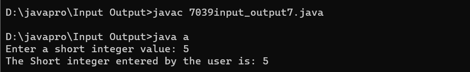

Program 1: Enter the character from user using InputStreamReader
//Enter the character from user using InputStreamReader
import java.io.*;
class InputStreamReaderP{
public static void main(String args[])throws Exception{
InputStreamReader r=new InputStreamReader(System.in);
BufferedReader br=new BufferedReader(r);
System.out.println("Enter your name");
String name=br.readLine();
System.out.println("Welcome "+name);
}
}
Output:

Program 2: Enter the string from user using BufferedStreamReader
import java.io.*;
class Buffered_Stream
{
public static void main ( String s[] ) throws IOException
{
System.out.print ( "Enter the string: " );
BufferedReader input = new BufferedReader ( new InputStreamReader ( System.in ) );
String inputString = input.readLine();
System.out.println ( "Entered string is: " + inputString );
}
}
Output:

Program 3: Enter the integer from user using Scanner class
//Enter the integer from the user using Scanner class
import java.util.Scanner;
class A{
public static void main(String arg[])
{
Scanner s = new Scanner(System.in);
System.out.println("Enter an integer :-");
int a = s.nextInt();
System.out.println(a);
}
}
Output:

Program 4: Enter the float from user using Scanner class
import java.util.Scanner;
class FloatInputExample {
public static void main(String[] args) {
// Create a Scanner object to read user input
Scanner scanner = new Scanner(System.in);
System.out.print("Enter a float number: ");
// Check if the next token entered by the user is a float
if (scanner.hasNextFloat()) {
float userInput = scanner.nextFloat();
System.out.println("You entered: " + userInput);
} else {
System.out.println("Invalid input. Please enter a valid float number.");
}
// Close the Scanner to release resources
scanner.close();
}
}
Output:

Program 5: Enter the double from user using Scanner class
import java.util.Scanner;
class prog5 {
public static void main(String[] args) {
// Create a Scanner object to read input from the console
Scanner scanner = new Scanner(System.in);
// Prompt the user to enter a double
System.out.print("Enter a double: ");
// Check if the next input is a double
if (scanner.hasNextDouble()) {
// Read the double from the user
double userInput = scanner.nextDouble();
// Display the entered double
System.out.println("You entered: " + userInput);
// Check if the entered double is positive, negative, or zero
if (userInput > 0) {
System.out.println("The entered double is positive.");
} else if (userInput < 0) {
System.out.println("The entered double is negative.");
} else {
System.out.println("The entered double is zero.");
}
} else {
// If the input is not a double, display an error message
System.out.println("Invalid input. Please enter a valid double.");
}
// Close the scanner
scanner.close();
}
}
Output:

Program 6: Enter the boolean from user using Scanner class
import java.util.*;
class Boolean {
public static void main(String[] args) {
System.out.print("Are you above 18?- ");
Scanner sc = new Scanner(System.in);
boolean bn = sc.nextBoolean();
if (bn == true) {
System.out.println("You are over 18");
} else if (bn == false) {
System.out.println("You are under 18");
}
sc.close();
}
}
Output:

Program 7: Enter the short integer from user using Scanner class
import java.util.Scanner;
class a
{
public static void main(String[] x)
{
//object of the Scanner class
Scanner s=new Scanner(System.in);
System.out.print("Enter a short integer value: ");
//invoking nextShort() method that reads an integer input by keyboard
//storing the input number in a variable num
int num = s.nextShort();
System.out.println("The Short integer entered by the user is: "+num);
}
}
Output:
Program 8: Enter the long integer from user using Scanner class
import java.util.Scanner;
//Enter the long integer from user using Scanner class
class LongUsingScanner
{
public static void main(String[] args)
{
Scanner sc = new Scanner(System.in);
System.out.println("Enter a long integer : ");
long l = sc.nextLong();
System.out.println("long integer is : "+l);
}
}
Output:

Program 9: Get all characters from the file and display on the screen
import java.io.BufferedReader;
import java.io.FileReader;
import java.io.IOException;
class prog9 {
public static void main(String[] args) {
// Replace "your_file_path.txt" with the path to your text file
String filePath = "abc.txt";
try{
BufferedReader reader = new BufferedReader(new FileReader(filePath));
int character;
// Read and display each character until the end of the file
while ((character = reader.read()) != -1) {
System.out.print((char) character);
}
} catch (IOException e) {
System.out.println("Error reading the file: " + e.getMessage());
e.printStackTrace();
}
}
}
Output:

Program 10: Get all characters from the file, count number of lines, words, characters and display on the screen
import java.io.BufferedReader;
import java.io.FileReader;
import java.io.IOException;
class prog10 {
public static void main(String[] args) throws ClassNotFoundException{
String filePath = "abc.txt"; // Replace with the actual path to your file
try{
BufferedReader reader = new BufferedReader(new FileReader(filePath));
int character;
int lineCount = 0;
int wordCount = 0;
int charCount = 0;
boolean inWord = false;
while ((character = reader.read()) != -1) {
charCount++;
// Count lines
if (character == '\n') {
lineCount++;
}
// Count words
if (Character.isWhitespace(character)) {
inWord = false;
} else if (!inWord) {
inWord = true;
wordCount++;
}
}
// Display statistics
System.out.println("Number of lines: " + lineCount);
System.out.println("Number of words: " + wordCount);
System.out.println("Number of characters: " + charCount);
} catch (IOException e) {
e.printStackTrace();
}
}
}
Output: